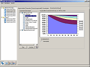

Karsten Held
SharePoint / M365 / GenAI Developer
IT Support Specialist
A highly qualified and versatile consultant for SharePoint, M365, and GenAI with over 20 years of experience in IT support, software development, SharePoint architecture, and M365 solutions. Three years of experience as a SharePoint Admin and 3rd Level Support for the energy company Vattenfall. Worked in various industries, including finance, healthcare, telecommunications, and energy. Experienced in ITIL, solution architecture, full-stack development, and UX design. Leader of technical projects, trainer, and 3rd-Level Support specialist, with certifications in Microsoft technologies. Fluent in German, English, and Hungarian.
Download CV


Work Samples

M-OnSite mobile App
A mobile app for iOS and Android that facilitates working through checklists during conference setup. The app is downloaded via the AppGyver scanner and also works offline. In online mode, the pending checks are synchronized with the server. The project manager can see the setup status on his iPad and give instructions via chat.
The solution runs with a SharePoint backend so that all information is also available in the intranet.
Developed with HTML5/JS/CSS3 using the AppGyver frameworks with Steroids/Cordova.
Customer information
M Events offers project management and state-of-the-art technology for conferences and events.
To homepage
Project management solution for SharePoint
A SharePoint solution was developed for project management at M Events. It allows projects to be created and archived and was implemented with SharePoint workflows.
To ensure access to the data offline, an Excel sheet with SharePoint connection was created.
Customer information
M Events offers project management and state-of-the-art technology for conferences and events.
To homepage
CryptoXL
The project aimed to enable end-to-end encryption with AES256 for SharePoint. Data is stored encrypted in SharePoint and is only decrypted and encrypted on the user's computer.
For the Excel client, an AES256 encryption VBA was programmed, which is 100% compatible with the Crypto.JS JavaScript library.
Developed with HTML5/JS and VBA using AngularJS, Crypto.js and VBA-WEB.
Customer information
WhizzyTools creates apps & tools for Microsoft Office and SharePoint.
To homepage
Mobile Performance Record with Excel
The goal was to implement a solution that allows CARL GmbH employees to record their working hours on Android tablets using Excel sheets. The filled-in Excel sheets are stored on a central Dropbox.
Using a master sheet, employee data is imported and checked daily. At the end of the month, it is exported in aggregated form for the tax advisor.
Customer information
CARL GmbH operates guesthouses in Munich.
To homepage
M Events Intranet
The SharePoint intranet of M Events was revised and restructured in early 2015. A branding package was developed and implemented. As part of the restructuring, smaller apps with workflows were also developed.
Customer information
M Events offers project management and state-of-the-art technology for conferences and events.
To homepage
Excel Time Tracking
A solution for time tracking and project cost control for Excel. Designed for both freelancers and smaller teams. Fully expandable; runs in 22+ languages. Includes a master sheet that aggregates the recorded working hours of team members.
The solution runs in work environments with high IT security requirements, without macros and add-ins.
Customer information
WhizzyTools creates apps & tools for Microsoft Office and SharePoint.
Download
DesktopTracker Design & Implementation
Design and implementation of a web application focused on ease of use. The design incorporates many UI features of the Vaadin framework.
The application was implemented in Java and successfully realized in detail.
Customer information
Avalain is a young startup from Budapest, HUNGARY.

Position Keeping Solution
The Portfolio Monitor was developed and improved over several years. It is a tool for position keeping and is used for hedge funds and overlays. It supports derivatives such as futures, options, and FX forwards. The goal is position evaluation and risk monitoring (Value-At-Risk) in real-time.
The program was developed in C# under the .NET Framework 3.5 and uses the Bloomberg Terminal API (.NET and COM).
Customer information
Vescore is a financial services provider from Munich.
Download Short Reference
Market Navigator
Design and implementation of the Market Navigator (Java, Swing, C#). A client-server application for visualizing model-based return predictions.
The application was programmed in Java (Swing) and delivered over the internet via Java WebStart. The database and calculation modules were accessed via SOAP.
Customer information
Vescore is a financial services provider from Munich.
Download Short Reference Download Specification (Excerpt)
Factsheet Engine
The goal was to create an Excel-based solution for semi-automatically creating monthly fund factsheets.
Customer information
Vescore is a financial services provider from Munich.

Bencer Web 2012
Redesign of the web presence with a focus on improved display on mobile devices. The website supports over 12 browsers.
The menu was implemented in JavaScript.
Customer information
Bencer Project Management is one of the leading German project managers for construction projects in China.
To website
Bencer Construction Web 2011
Website design and implementation for Bencer's new 'Construction' spinoff.
The slide box on the right was implemented in JavaScript.
Customer information
Bencer Project Management is one of the leading German project managers for construction projects in China.
To website
Bencer Web 2010
Design and programming of the company's website.
Customer information
Bencer Project Management is one of the leading German project managers for construction projects in China.

FUTOP ID Generator
This Excel-based solution generates an identifier for futures and options that can be traded on international exchanges, similar to the ISIN for stocks.
Using this FUTOP ID, fully automated inventory imports and checks for over 20 funds were implemented, which collaborate with 7 banks and financial institutions.
Customer information
Vescore is a financial services provider from Munich.

Quick Inventory Check
This Excel-based solution helps the fund manager review inventories. The simple traffic light system makes it easy to find discrepancies between the portfolio manager and the investment bank.
The preliminary work is done by a fully automated import of executed orders and inventories from emails, reporting websites, Excel sheets, CSV, PDF, and other formats.
The solution was implemented with an Excel add-in. The import was implemented in AutoIt, a popular automation scripting language.
Customer information
Vescore is a financial services provider from Munich.

TODI Attachment Saver
This Microsoft Outlook add-in saves attachments to the local hard drive and reduces the size of the Outlook PST file. The attachments are linked at the end of the email.
The add-in was implemented in Visual Basic 6 and uses the Outlook COM add-in interface.

WhizzyTools Corporate Design Manual
Corporate design manual for WhizzyTools.com: logos, icons, color palettes, and fonts.
Customer information
WhizzyTools.com develops apps for Microsoft Office.
View on Behance


Services
Copilots, GenAI / RAG Solutions
AI trainings and webinars. Implementation of Retrieval Augmented Generation solutions using Azure AI Studio and Copilot Studio. Model fine-tuning, evaluation, benchmarking.
SharePoint Solutions
Information architecture, solution design, document management systems, portals, Web Part development, integration with Azure Logic Apps and Power Automate.
Microsoft 365 App Development
Business process automation, Power App development, extranet solutions with Power Pages, AI Builder, Microsoft Dataverse backends, Power Apps Component Framework, Custom Connectors.
Microsoft 365 Consulting
M365 governance, intranet solutions, migration projects, data loss prevention, retention policies, best practices, webinars, user training, 3rd level support.
Experience
-
Now
-
APR 2021 - OCT 2024
External SharePoint Developer @ Vattenfall, Berlin
Development of SharePoint solutions (Web Parts and backend jobs), 3rd level support, SharePoint governance, Power App development.
Go to project -
JUL 2019 - MAR 2021
External SharePoint Support Specialist @ Vattenfall, Berlin
SharePoint Online & Office 365 administration, 3rd level support, development & implementation of governance guidelines, tenant-level reporting, SharePoint training (videos & onsite).
-
JAN 2019 - MAY 2019
Freelance SharePoint Consultant @ GASAG AG, Berlin
Development of a SharePoint Online contact & event management solution with external mail integration via REST API.
-
Sep 2017 - Jun 2018
Consultant @ Deutsche Post DHL Group AG, Bonn
Maintenance, development and performance optimization of an Excel/VBA/SharePoint solution for the Information Security Self-Assessment (ISSA) and internal reporting (department 192).
-

Sep 2016 - Apr 2017
Freelance SharePoint Consultant at Orbit GmbH, Bonn for Telekom Digital Division
UX design / implementation of a product inventory system on SharePoint basis. Development of a SharePoint site provisioning solution (Provider Hosted App, CSOM, C#, ASP.NET).
-

Oct 2015 - Oct 2016
Freelance Software Architect for m|events, Munich
Development of a mobile app (iOS & Android) for the use of mobile onsite checklists during conference setup with SharePoint backend.
Go to project -

Sep 2015
Freelance SharePoint Consultant for AUC Akademie der Unfallchirurgie GmbH, Munich
Introduction of SharePoint and migration of file shares to Office 365 / SharePoint Online.
-

Jun 2015 - Aug 2015
Freelance SharePoint Consultant at m|events, Munich
Development of a project management tool for SharePoint using workflows. Implementation of an Excel solution for offline scenarios.
Go to project -

May 2015
Freelance Developer for WhizzyTools, Dresden
Development of end-to-end AES256 encryption with SharePoint backend for web apps and Excel solutions using Crypto.js and VBA-WEB.
Go to project -

Apr 2015
Freelance Excel Consultant at Carl GmbH, Munich
Development of an Excel-based solution for mobile performance verification with Android tablets and export for tax consultants.
Go to project -

Jan 2015 - Mar 2015
Freelance SharePoint Consultant at m|events, Munich
Structuring and redesigning of the intranet with Office 365 / SharePoint Online.
Go to project -
May 2014 - Jun 2014
Freelance Excel Consultant at WhizzyTools, Dresden
Design and development of an Excel-based solution for time tracking and project cost control.
Go to project -

Jan 2014 - Feb 2014
Freelance Designer at WhizzyTools, Dresden
Corporate design manual for WhizzyTools.com: logos, icons, color palettes, and fonts.
Go to project -

Jan 2013 - Dec 2013
Freelance Developer at Avalain, Budapest
UI design and implementation of the DesktopTracker in Java using the Vaadin framework.
Go to project -

Jun 2012 - Dec 2012
Project Manager at Communardo, Dresden
Design, specification, and configuration of SharePoint intranets for clients like Axel Springer AG and Voestalpine Group.
-

Jan 2012 - Mar 2012
Freelance Web Designer at Bencer, Shanghai
Redesign of corporate identity and website with a focus on mobile devices.
Go to project -

Oct 2011 - Nov 2011
Freelance Software Architect at Osyon GmbH, Berlin
Design and prototype implementation of a groupware tool for task management.
Go to project -

Apr 2011 - Jun 2011
Freelance Software Architect Osyon GmbH, Berlin
Design of a website for saving, sharing, and editing tabular data.
Go to project -

Feb 2011 - May 2011
Freelance Web Designer at Bencer, Shanghai
Web design and implementation of the website for Bencer's new 'Construction' spin-off.
Go to project
-
-
2010
-

Nov 2010 - Dec 2010
Freelance Designer at Bencer, Shanghai
Design of a company brochure.
Go to project -

Jan 2010 - May 2010
Freelance Web Designer at Bencer, Shanghai
Design and programming of the company's website.
Go to project -

Mar 2009 - Apr 2009
Freelance Developer at financial.com, Munich
Connection of an Excel add-in (VBA) to the Thomson-Reuters terminal.
-

Nov 2009 - Jan 2010
Freelance Software Architect at Vescore, Munich
Architecture of a portfolio management solution.
-

Aug 2006 - Aug 2008
Department Manager at Vescore, Munich
Development of portfolio management tools in C# (WinForms) and Excel (C#, C++, VBA).
Go to project -

Jan 2004 - Jul 2006
Junior Portfolio Manager at Vescore, Munich
Management of globally invested funds (Value, Private Equity). Development of trading tools (Excel, VBA, C#) with Bloomberg.
-
-
2004
-

Jan 2001 - Dec 2003
Java/C# Developer @ vescore.com
Design & implementation of the MarketNavigator (Java Swing, WebStart) for the visualization of model data.
Go to project -

Mar 2000 - Dec 2000
Developer at Dr. Grob & Partner
Prototype of a structure management system (VB6) based on the Swiss structure database KUBA.
-
-
More Information:
Download CV

Contact
Karsten Held
Rothenburger Strasse 32
D-10099 DRESDEN
+49 176 70861679
karstenheld3@gmail.com